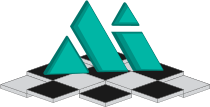
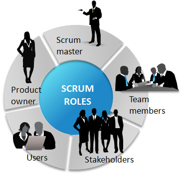
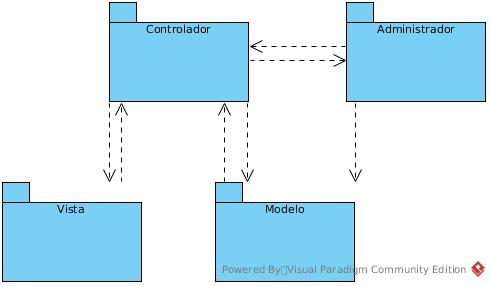
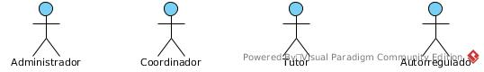
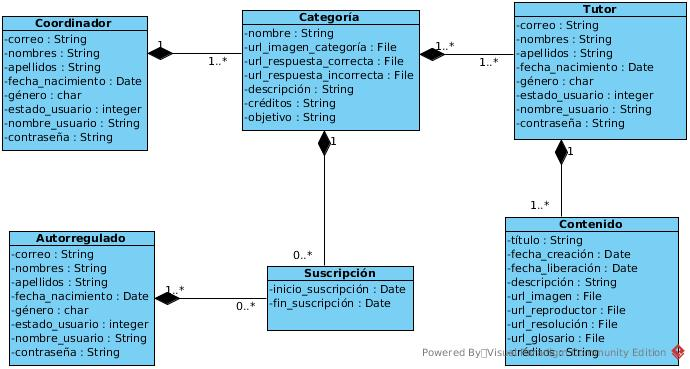
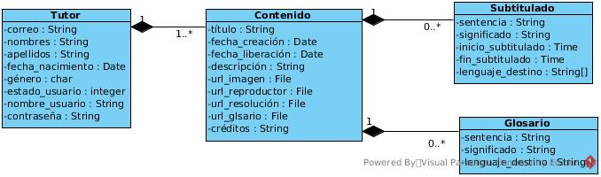
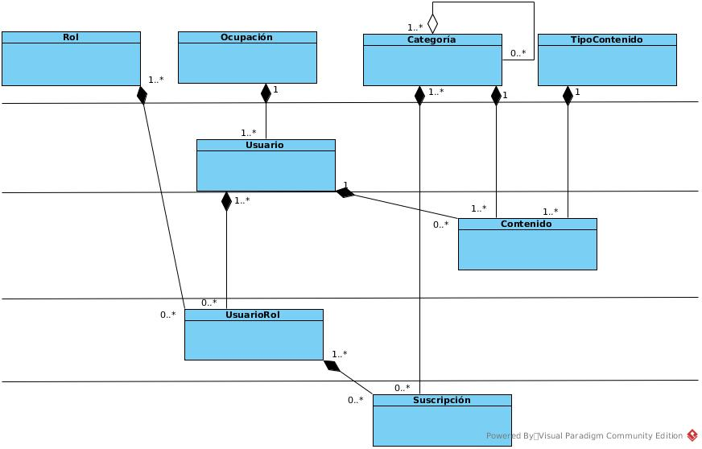
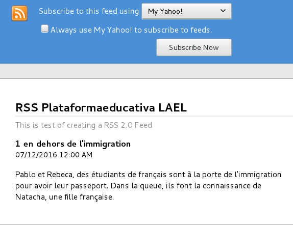
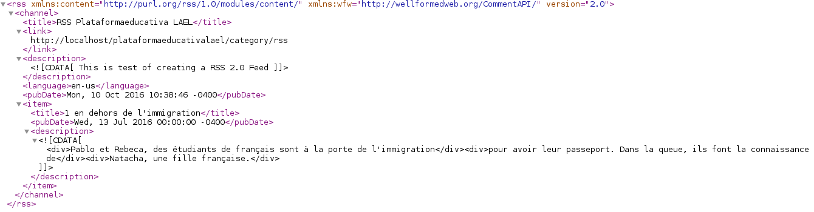

|  | |
|
Plataforma web educativa que gestione suscriptor de noticia para podcast producido por la Carrera de LAEL
Realizado por: Juan Omar Huanca Balboa |
|
Índice General
- Objetivos: general y específicos.
- Área de aplicación.
- Metodología y plataforma desarrollo.
- Desarrollo del proyecto.
- Demostración.
- Uso de herramientas.
- Conclusiones.
- Recomendaciones.
Objetivos
Implementar un suscriptor de podcast para el fortalecimiento del aprendizaje autorregulado de las lenguas francés, inglés y quechua.
-
Proveer personalización para suscripción por programa de aprendizaje.
-
Implementar glosario y subtitulado.
-
Representar el uso de web semántica para glosario y subtitulado.
-
Realizar prueba de unidad para suscripción, reproducción de audio y de vídeo.
Área de aplicación
Autorregulado Schunk(1997)
Aprendizaje autorregulado Zimmerman(1994)
Metodología y plataforma desarrollo
Metodología y plataforma desarrollo
Metodología y plataforma desarrollo
Lado del servidor
Lado del cliente
Desarrollo del proyecto
Arquitectura de proyecto extendida MVCA.
Desarrollo del proyecto
Designacion de roles.
Desarrollo del proyecto
Suscripción, baja de suscripción y liberación de contenido.
Desarrollo del proyecto
Diagrama de clases para glosario y subtitulado.
Desarrollo del proyecto
Representa la dependencia de clases de suscripción.
Demostración
-
Proveer personalización para suscripción por programa de aprendizaje.
-
Suscripción categoría manual y dar de baja suscripción.
-
Implementar glosario y subtitulado.
-
Glosario y subtitulado de transcripción de pocast.
-
Representar el uso de web semántica para glosario y subtitulado.
-
Uso de web semántica para glosario y subtitulado.
-
Realizar prueba de unidad para suscripción, reproducción de audio y de vídeo.
Uso de web semántica para subtitulado
Obtención de un archivo con subtitulado.
Vista de un podcast de tipo audio.
Uso de web semántica para glosario
Obtención de un archivo con glosario.
Vista de un podcast de tipo audio.
| Caso de Prueba de Unidad | |||
|---|---|---|---|
| Caso ID: 7 | Nombre de módulo: Suscripción | Título: ejecutarSuscripción | Prioridad: Medio |
| Dependencia: Ocupación, Usuario, Rol, UsuarioRol, Categoría | Pre condición: Usuario disponible, Contenido disponible. | ||
| Pasos | Datos | Resultado esperado | Resultado actual |
| Registrar datos de suscripción. | categoría_id_categoría=7 id_usuario_rol=2 usuario_id_usuario=2 rol_id_rol=2 |
verdad | verdad |
| Caso de Prueba de integración | |||
|---|---|---|---|
| Caso ID: 8 |
Nombre módulo: Contenido |
Título: reproducirAudio |
Prioridad: Bajo |
| Dependencia: Ocupación, Usuario, Rol, UsuarioRol, Categoría, TipoContenido |
|||
| Pre condición: Contenido disponible, phpunit disponible, selenium webdriver ejecutado. |
|||
| Pasos | Datos | Resultado esperado |
Resultado actual |
| Obtener URL de podcast audio. |
http://localhost/ plataformaeducativalael/ content/viewContent?id_content=1& user_id_user=27& type_content_id_type_content=1& category_id_category=2 |
verdad | verdad |
| Caso de Prueba de integración | |||
|---|---|---|---|
| Caso ID: 9 |
Nombre módulo: Contenido |
Título: reproducirVídeo | Prioridad: Bajo |
| Dependencia: Ocupación, Usuario, Rol, UsuarioRol, Categoría, TipoContenido |
|||
| Pre condición: Contenido disponible, phpunit disponible, selenium webdriver ejecutado. |
|||
| Pasos | Datos | Resultado esperado |
Resultado actual |
| Obtener URL de podcast vídeo. |
http://localhost/ plataformaeducativalael/ content/viewContent? id_content=2& user_id_user=27& type_content_id_type_content=2 &category_id_category=4 |
verdad | verdad |
Uso de Herramientas
Visualización de un RSS 2.0 en un navegador firefox.
Uso de Herramientas
Visualización de un RSS 2.0 e un navegador chrome.
Uso de Herramientas
- h-x-lyrics
- p-lyric h-x-lyric
- p-start-time
- p-content
- p-end-time

Uso de estructura propuesta para subtitulado de microformato.
Conclusiones
-
Se provee de un servicio de suscripción de noticia podcast vía correo electrónico, el cual también permite la opción al usuario de darse de baja.
-
Se sincroniza transcripción con reproductor podcast por medio de un subtitulado.
-
Se proporciona la gestión de glosario de podcast.
-
Se agrega contenido semántico para subtitulado y representación de glosario.
-
Se utiliza pruebas de unidad para agregar manejo de una situación no esperada.
Recomendaciones
-
El proyecto de adscripción de software debe utilizar licencia LPG-Bolivia. (T)
-
Se recomienda utilizar medios de comunicación para solicitar sugerencia y uso de una tecnolgía específica. (H)
-
El tutor y el equipo de desarrollo deben disponer de un ambiente de trabajo. (Pr)
-
Un documento de redacción de adscripción debe contemplar reglas gramaticales de ortografía, coherencia y concordancia por lo cual se debe solicitar colaboración a una persona del área de LAEL. (R)